Bayesian phylogeography
Theory
Cuban Bioinformatics Workshop on
Virus Evolution and Molecular Epidemiology
Slides for the lectures availiable at:
https://github.com/fbielejec/veme2016
Phylogenetic trees

Depict relationships between genes or organisms.
Estimated from comparative data (nucleotide, codon, amino-acid or other character sequences) observed at the tips.
To do inference one needs a probabilistic model that describes the process of character change along the bifurcating tree.
Continuous time markov chain

CTMC substitution models are commonly used to describe the substitution process at a particular site in the alignment.
They are fully characterized by $K \times K$ rate matrix $\mathbf{Q}$, where $K$ denotes the size of the discrete state space $S$.
Phylogeography
Phylogeography connects evolutionary processes, which happen over time, with the processes of spatial dispersal into a joint spatio-temporal dynamic.
"$\left(\ldots\right)$ a field of study concerned with the principles and processes governing the geographic distribution of genealogical lineages, especially those within and among closely related species." --- Avise, 2000
Phylogeography
Historically phylogeographic inference ignored the joint character of the two processes.
Stepwise procedure:
- Infer the tree using character sequence data only.
- Reconstruct the spatial diffusion, conditioning on the inferred tree topology.
- Uncertainty?
Bayesian Phylogeography
Lemey et al, [2009] considered Bayesian reconstruction that allows for joint inference of the evolutionary history and spatial dispersal.
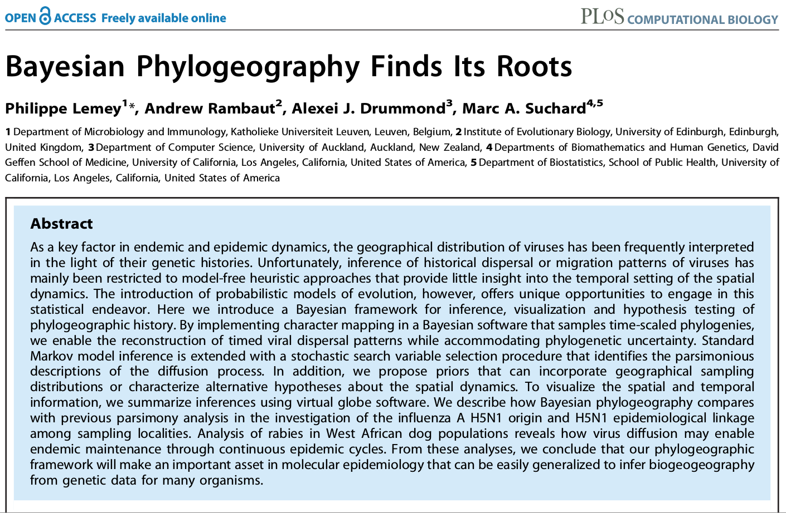Bayesian Phylogeography
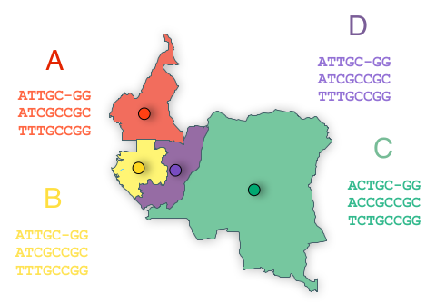
Observed data at the $N$ tips of phylogeny $\mathbf{F}$ now consist of both the character sequences $\mathbf{X}=(X_{1},...,X_{N})$ and geographic locations (countries, districts, cities) at which they were recorded $\mathbf{Y}=(Y_{1},...,Y_{N})$.
Bayesian Phylogeography
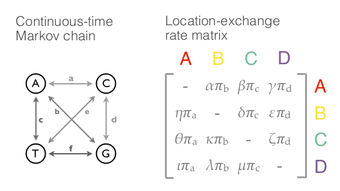
Two independent stochastic processes are responsible for generating the data:
Ancestral states of $\mathbf{X}$ are generated as before by a CTMC characterized by rate matrix $\mathbf{Q}$.
Unobserved ancestral locations $(Y_{N+1},...,Y_{2N-2})$ are generated by a separate CTMC characterized by rate matrix $\mathbf{\Phi}$.
Posterior probability
$P\left(\mathbf{F},\mathbf{Q},\mathbf{\Phi}|\mathbf{X},\mathbf{Y}\right)\approx$ $\underbrace{P(\mathbf{X}|\mathbf{Q},\mathbf{F})}_{\begin{array}{c} \substack{\text{Sequence}\\ \text{likelihood} } \end{array}}\cdot\underbrace{P(\mathbf{Y}|\mathbf{\Phi},\mathbf{F})}_{\begin{array}{c} \substack{\text{Location trait}\\ \text{likelihood} } \end{array}}\cdot\underbrace{P(\mathbf{F})}_{\begin{array}{c} \substack{\text{Topology}\\ \text{prior} } \end{array}}\cdot\underbrace{P(\mathbf{Q})}_{\begin{array}{c} \substack{\text{Sequence substitution}\\ \text{prior} } \end{array}}\cdot\underbrace{P(\mathbf{\Phi})}_{\begin{array}{c} \substack{\text{Location exchange}\\ \text{prior} } \end{array}}$
Markov Chain Monte Carlo (MCMC) algorithms are used to sample directly from $P\left(\mathbf{F},\mathbf{Q},\mathbf{\Phi}|\mathbf{X},\mathbf{Y}\right)$.
Discrete diffusion models
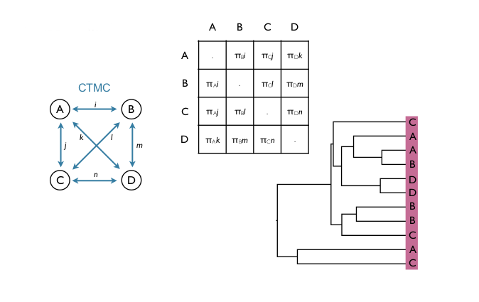
- The entries of the transition matrix $\mathbf{\Phi}$ are the transition rates $\phi_{ij}$ between locations $i$ and $j$.
- They are the parameters we wish to estimate by the MCM.
Location exchange rate priors
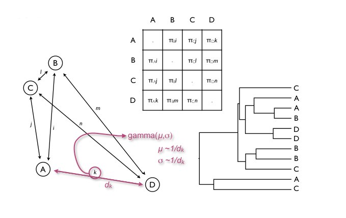
- Rates in $\mathbf{\Phi}$ are a priori independent and Gamma distributed (strictly positive).
- Distance informed priors: More geographically distant sites have smaller infinitesimal migration rates.
Do we need all those location parameters?
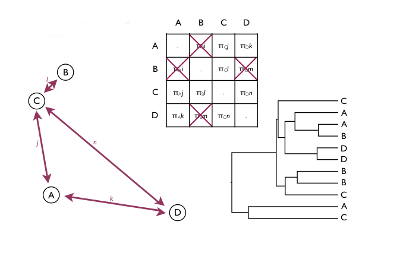
- Geographic location data $\mathbf{Y}$ is sparse.
Bayesian stochastic search variable selection [Cybis et al. 2013]
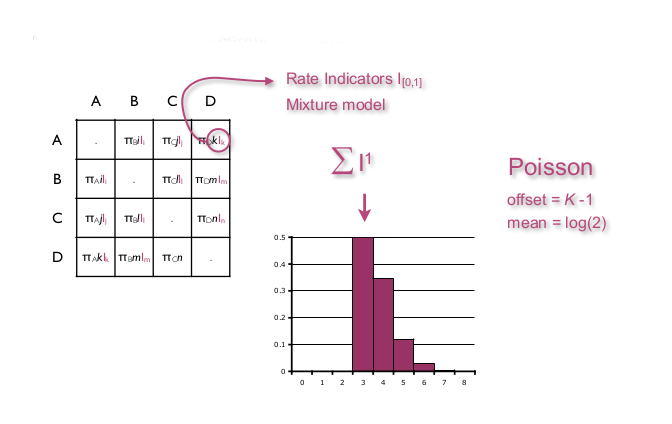
- BSSVS: Augments the state space with binary indicator variables $I_{[0,1]}$ (Bernoulli RV's).
- A priori expect most transitions to occur with a rate $0$.
Bayes factors (BF)
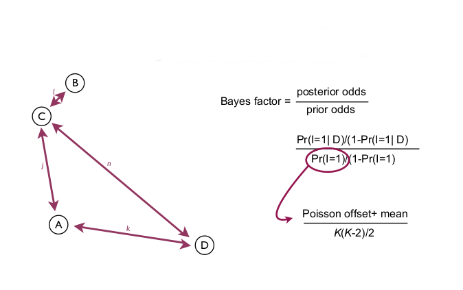
- MCMC exploration of the $I_{[0,1]}$ indicators parameter space has an interesting by-product.
- BFs provide a natural test of the significance of a particular diffusion rate.
Bayes factors

- SpreaD3 (Bielejec, et al. [2016]) identifies and vizualises well-supported rates through Bayes factor tests.
Bayes factors
- Kass and Raftery (1995) provide a table for the interpretation of BF:
| K | strength of evidence |
|---|---|
| 1 to 3 | bare mention |
| 3 to 20 | positive |
| 20 to 150 | strong |
| >150 | very strong |
Continuous phylogenetic diffusion
[Lemey et al 2010]
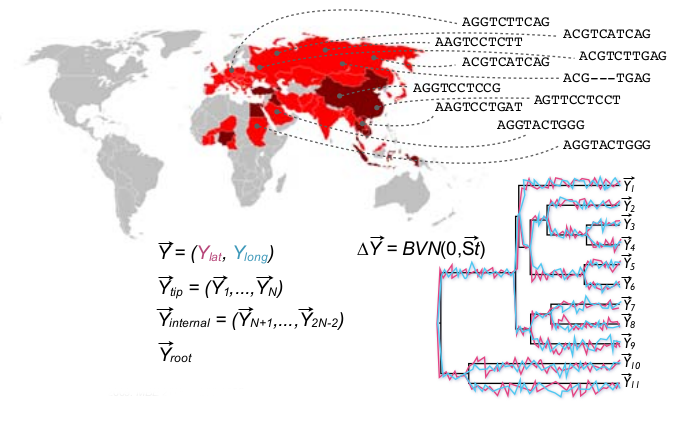
- The sampling scheme sometimes does not render itself to discretization.
Continuous phylogenetic diffusion
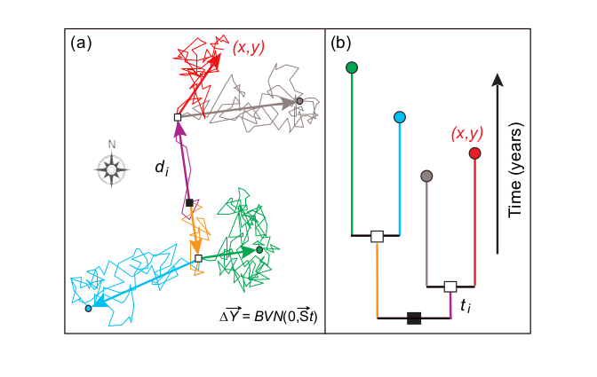
- Continuous model models the diffusion process as draws from a bivariate normal distribution.
Continuous phylogenetic diffusion
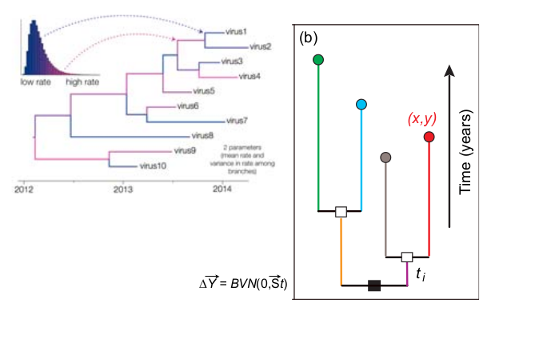
- Under "vanilla" brownian diffusion process each branch evolves at the same rate, which is biologically implausible.
- To relax that assumption each branch gets a Gamma distributed rate scalar (relaxed random walk).
Beast [Drummond et al., 2012]
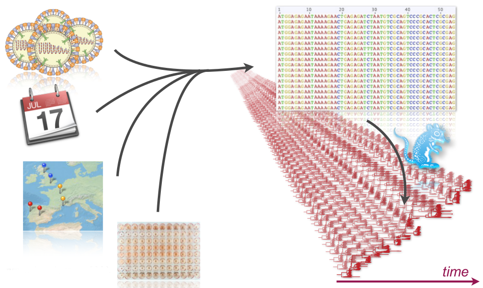
- Framework and a suite of programs for Bayesian phylogenetics which implement the presented models.
Example: Global influenza dynamics
Seasonal circulation of Influenza A H3N2 [Bielejec et al., 2014]

- Influenza A H3N2 sequences sampled between 2003 to 2006 from Australia, Europe, Japan, USA, New Zealand, Southeast Asia and Hong Kong ($n = 75$ each, dataset from Bahl et al., 2011).
Seasonal circulation of Influenza A H3N2
- Source / sink in influenza dynamics?
Seasonal circulation of Influenza A H3N2
- Phylogeographic model of diffusion between $K=7$ locations, $S=8$ epochs alternating between spring and summer to autumn and winter on the northern hemisphere.
- Parameters of the diffusion processes are shared among spring - summer and autumn - winter epochs.
Seasonal circulation of Influenza A H3N2
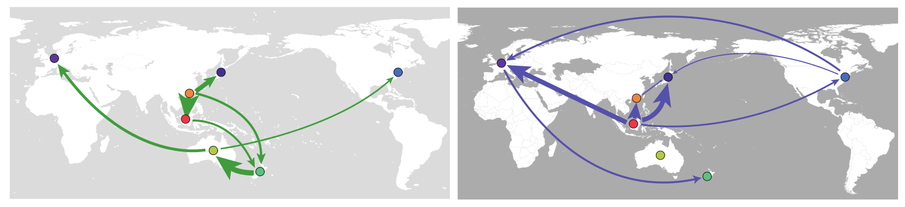
- Best supported diffusion rates for the spring - summer (left) and autumn - winter (right) epochs.
- Seasonal dynamics with prominent role of Southeast Asia.
- Source - sink?